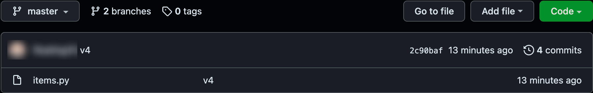
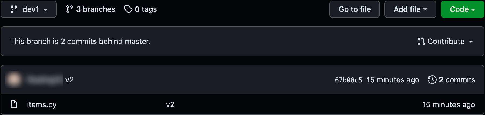
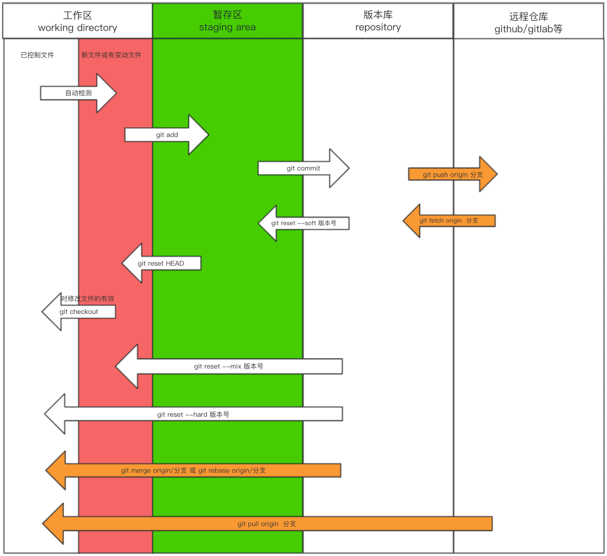

1. Github
1.1 上传 push
git push 命用于从将本地的分支版本上传到远程并合并。命令格式如下：
git push <远程主机名> <本地分支名>:<远程分支名>
如果本地分支名与远程分支名相同，则可以省略冒号：
git push <远程主机名> <本地分支名>
删除主机的分支可以使用 –delete 参数，以下命令表示删除 origin 主机的 master 分支：
git push origin --delete master
首先创建一个 github 仓库 git_exercise，复制其地址。在 git 中设置该 github 仓库的地址：
(base) wanghaoming@localhost git_test % git remote add origin https://github.com/git_username/git_exercise.git
这行命令为对该 git_exercise 仓库起一个别名 origin（也可以取其他别名），这一点在 git_test/.git/config 文件中可以看到：
(base) wanghaoming@localhost git_test % cat ./.git/config
[core]
repositoryformatversion = 0
filemode = true
bare = false
logallrefupdates = true
ignorecase = true
precomposeunicode = true
[remote "origin"]
url = https://github.com/git_username/git_exercise.git
fetch = +refs/heads/*:refs/remotes/origin/*
然后将本地版本推送到 git_exercise 仓库中：
(base) wanghaoming@localhost git_test % git push -u origin master
Enumerating objects: 12, done.
Counting objects: 100% (12/12), done.
Delta compression using up to 8 threads
Compressing objects: 100% (8/8), done.
Writing objects: 100% (12/12), 890 bytes | 890.00 KiB/s, done.
Total 12 (delta 1), reused 0 (delta 0), pack-reused 0
remote: Resolving deltas: 100% (1/1), done.
remote:
remote: Create a pull request for 'master' on GitHub by visiting:
remote: https://github.com/git_username/git_exercise/pull/new/master
remote:
To https://github.com/git_username/git_exercise.git
* [new branch] master -> master
Branch 'master' set up to track remote branch 'master' from 'origin'.
这行命令为将本地的 master 分支上的所有版本推送到 origin 仓库中（git_exercise 仓库）。
注意：
- 在推送之前必须有本地的 git 版本库，否则需要先
git init，git add，git commit建立本地版本库。- 如果第一次使用 github，在 push 这一步过程中还需要填写 github 账户的用户名和密码。
- github 默认分支为 main，我们需要在 git_exercise 仓库-Setting-Branches 中将其修改为 master。
此时在 github 中的 git_exercise 仓库就可以看到推送上去的文件了：

也可以推送其他分支：
(base) wanghaoming@localhost git_test % git push -u origin dev1
Total 0 (delta 0), reused 0 (delta 0), pack-reused 0
remote:
remote: Create a pull request for 'dev1' on GitHub by visiting:
remote: https://github.com/git_username/git_exercise/pull/new/dev1
remote:
To https://github.com/git_username/git_exercise.git
* [new branch] dev1 -> dev1
Branch 'dev1' set up to track remote branch 'dev1' from 'origin'.
在 github 中也可以看到：

1.2 下载 clone
git clone 拷贝一个 Git 仓库到本地，让自己能够查看该项目，或者进行修改。拷贝项目命令格式如下：
git clone [url]
[url] 是要拷贝的项目。拷贝完成后，在当前目录下会生成一个目录，目录中将复制该项目的全部记录。
默认情况下，Git 会按照提供的 URL 所指向的项目的名称创建你的本地项目目录。 通常就是该 URL 最后一个 / 之后的项目名称。如果你想要一个不一样的名字， 可以在该命令后加上你想要的名称：
git clone [url] <dir_name>
下面换到另一个目录下将 github 中 git_exercise 仓库下载到本地：
(base) wanghaoming@localhost ~ % cd ~/Documents/git_test0
(base) wanghaoming@localhost git_test0 % git clone https://github.com/git_username/git_exercise.git
Cloning into 'git_exercise'...
remote: Enumerating objects: 15, done.
remote: Counting objects: 100% (15/15), done.
remote: Compressing objects: 100% (8/8), done.
remote: Total 15 (delta 1), reused 12 (delta 1), pack-reused 0
Receiving objects: 100% (15/15), done.
Resolving deltas: 100% (1/1), done.
在
git clone <url>的过程中，git 会自动给<url>起别名 origin。因此之后若要向该远程仓库推送代码，则不需要再git remote add了。
git 会将 git_exercise 仓库作为目录下载到 git_test0 目录中：
(base) wanghaoming@localhost git_test0 % tree
.
└── git_exercise
└── items.py
1 directory, 1 file
进入 git_exercise 目录，会发现只有一个 master 分支
(base) wanghaoming@localhost git_test0 % cd git_exercise
(base) wanghaoming@localhost git_exercise % git branch
* master
但事实上 git 将 git_exercise 仓库中的所有分支（包括 main 分支）都下载下来了，我们可以直接切换：
(base) wanghaoming@localhost git_exercise % git checkout main
Branch 'main' set up to track remote branch 'main' from 'origin'.
Switched to a new branch 'main'
(base) wanghaoming@localhost git_exercise % git checkout dev1
Branch 'dev1' set up to track remote branch 'dev1' from 'origin'.
Switched to a new branch 'dev1'
(base) wanghaoming@localhost git_exercise % git log
commit 67b08c5cf97d0207b9627d0de34a59299a010956 (HEAD -> dev1, origin/dev1)
Author: git_username <git_username@163.com>
Date: Wed Mar 6 13:53:31 2019 +0800
v2
commit 8890993a85e501523b5bc997599d76ea96835dff
Author: git_username <git_username@163.com>
Date: Wed Mar 6 13:52:43 2019 +0800
v1
1.3 更新 pull
git pull 命令用于从远程获取代码并合并本地的版本。 命令格式如下：
git pull <远程主机名> <远程分支名>:<本地分支名>
如果远程分支是与当前分支合并，则冒号后面的部分可以省略：
git pull <远程主机名> <远程分支名>
git pull 其实就是 git fetch 和 git merge FETCH_HEAD 的简写，因此若产生冲突，需要手动解决。
现在在本地的 git_exercise 目录中新写入一个文件 a1.py，将其推送到 github 的对应分支中：
(base) wanghaoming@localhost git_exercise % touch a1.py
(base) wanghaoming@localhost git_exercise % git status
On branch dev1
Your branch is up to date with 'origin/dev1'.
Untracked files:
(use "git add <file>..." to include in what will be committed)
a1.py
nothing added to commit but untracked files present (use "git add" to track)
(base) wanghaoming@localhost git_exercise % git add .
(base) wanghaoming@localhost git_exercise % git commit -m " 新增 a1.py"
[dev1 18f2037] 新增 a1.py
1 file changed, 0 insertions(+), 0 deletions(-)
create mode 100644 a1.py
(base) wanghaoming@localhost git_exercise % git push origin dev1
Enumerating objects: 4, done.
Counting objects: 100% (4/4), done.
Delta compression using up to 8 threads
Compressing objects: 100% (2/2), done.
Writing objects: 100% (3/3), 280 bytes | 280.00 KiB/s, done.
Total 3 (delta 0), reused 0 (delta 0), pack-reused 0
To https://github.com/floating15/git_exercise.git
67b08c5..18f2037 dev1 -> dev1
切换到 git_test 目录中利用命令 git pull origin <branch name> 将 github 中的代码更新下来：
(base) wanghaoming@localhost git_exercise % cd ~/Documents/git_test
(base) wanghaoming@localhost git_test % git pull origin dev1
hint: Pulling without specifying how to reconcile divergent branches is
hint: discouraged. You can squelch this message by running one of the following
hint: commands sometime before your next pull:
hint:
hint: git config pull.rebase false # merge (the default strategy)
hint: git config pull.rebase true # rebase
hint: git config pull.ff only # fast-forward only
hint:
hint: You can replace "git config" with "git config --global" to set a default
hint: preference for all repositories. You can also pass --rebase, --no-rebase,
hint: or --ff-only on the command line to override the configured default per
hint: invocation.
remote: Enumerating objects: 4, done.
remote: Counting objects: 100% (4/4), done.
remote: Compressing objects: 100% (2/2), done.
remote: Total 3 (delta 0), reused 3 (delta 0), pack-reused 0
Unpacking objects: 100% (3/3), 260 bytes | 86.00 KiB/s, done.
From https://github.com/floating15/git_exercise
* branch dev1 -> FETCH_HEAD
67b08c5..18f2037 dev1 -> origin/dev1
Merge made by the 'recursive' strategy.
a1.py | 0
1 file changed, 0 insertions(+), 0 deletions(-)
create mode 100644 a1.py
(base) wanghaoming@localhost git_test % tree
.
├── a1.py
└── items.py
0 directories, 2 files
可以看到 a1.py 文件已经被下载下来了。
1.4 补充 fetch
假设你配置好了一个远程仓库，并且你想要提取更新的数据，你可以首先执行:
git fetch [alias] <branchname>
[alias] 是远端主机的别名，默认为 origin，这一命令将远程分支下载到本地的版本库。该命令执行完后需要执行 git merge 将版本库的远程分支合并到工作区的当前分支。：
git merge [alias]/ <branchname>

1.5 功能上线
这一部分的内容不是新的知识。当在 git_test 目录中完成开发后可以将功能上线，并推送到远端，一般推荐以下流程：
(base) wanghaoming@localhost git_test % git checkout master # 1. 切换 master 分支
Switched to branch 'master'
Your branch is up to date with 'origin/master'.
(base) wanghaoming@localhost git_test % git merge dev1 # 2. 合并新功能
Merge made by the 'recursive' strategy.
at2.py | 0
www.py | 0
2 files changed, 0 insertions(+), 0 deletions(-)
create mode 100644 at2.py
create mode 100644 www.py
(base) wanghaoming@localhost git_test % git add . # 3. 添加到暂存区
(base) wanghaoming@localhost git_test % git commit -m "over dev" # 4. 生成新版本
On branch master
Your branch is ahead of 'origin/master' by 3 commits.
(use "git push" to publish your local commits)
nothing to commit, working tree clean
(base) wanghaoming@localhost git_test % git push origin master # 5. 推导远程主机的 master 分支
Enumerating objects: 4, done.
Counting objects: 100% (4/4), done.
Delta compression using up to 8 threads
Compressing objects: 100% (2/2), done.
Writing objects: 100% (2/2), 285 bytes | 285.00 KiB/s, done.
Total 2 (delta 1), reused 0 (delta 0), pack-reused 0
remote: Resolving deltas: 100% (1/1), completed with 1 local object.
To https://github.com/floating15/git_exercise.git
ae22352..ec2a5d8 master -> master
(base) wanghaoming@localhost git_test % git checkout dev1 # 6. 切换至 dev1 分支
Switched to branch 'dev1'
Your branch is up to date with 'origin/dev1'.
(base) wanghaoming@localhost git_test % git merge master # 7. 将 dev1 分支的代码更新至最新
Updating a343d3c..ec2a5d8
Fast-forward
at.py | 0
items.py | 5 +++++
2 files changed, 5 insertions(+)
create mode 100644 at.py
(base) wanghaoming@localhost git_test % git add . # 8. 提交的暂存库
(base) wanghaoming@localhost git_test % git commit -m "newest dev code" # 9. 生成版本
On branch dev1
Your branch is ahead of 'origin/dev1' by 5 commits.
(use "git push" to publish your local commits)
nothing to commit, working tree clean
(base) wanghaoming@localhost git_test % git push origin dev1 # 10. 推送至远端主机 dev1 分支
Total 0 (delta 0), reused 0 (delta 0), pack-reused 0
To https://github.com/floating15/git_exercise.git
a343d3c..ec2a5d8 dev1 -> dev1
2. 总结
git remote add origin <url>：给远程仓库起别名git push -u origin <branch>：将本地<branch>分支推送到远程仓库git clone <url>：克隆远程仓库到本地git pull origin <branch>：将远程仓库<branch>分支更新到本地